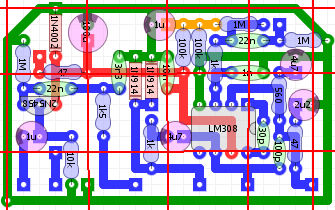

私のエフェクター自作方法【3】基板
2008年11月27日 カテゴリー：私のエフェクター自作方法
基板に部品を配置していきます。使う部品は小皿か何かにまとめておくと便利です。私のやり方は一般的かどうかわからないので参考にならないかもしれません。
まず基板を適度な大きさに切ります。基板の両面からアクリルカッター（もしくは普通のカッター）で切り込みを入れると簡単に割れます。下写真ではサボって切り込みが浅かったので若干失敗してます…
今回は普通の紙フェノール基板ですが、普段は両面スルーホールの基板を使っています。両面だと余分な半田が穴の中に流れていって失敗しにくいです。でも部品の交換は非常にやりにくいし、加工が大変（硬くて切りにくい）という欠点があります。
切った基板にはマジックで5穴ごとに線を引きます。今回はすでに白い線が入っているのでこのままです。
次に下図のようにレイアウトに線を引きます。基板に引いてある線と同じ位置に引きます。この線が部品をつけていくときの目印になります。普段はプリントアウトしたものに線を引くんですが、今回たまたまプリンターが使えなくてPC上で線を引いています。ちなみにレイアウトはProco RATです。

そして回路図のインプットから、回路図とレイアウトが合っているか確かめながら組んでいきます。部品の足を使って配線していく、ポイントトゥポイント配線とかいうやつです。電源部分は適宜やりやすいときに、アースの部分は最後にやることが多いです。プリント基板だと楽に早くできますが、私は配線の過程も好きなのでプリント基板は使ったことがありません。
部品の足をクリップで固定します。クリップを使わなくても部品の足が基板の銅箔に密着していればOKとします。下写真では足を切っていませんが、足を短く切ってから半田付けすることもあります。

上写真の状態から、部品の足に半田ごてをあて、半田を流します。半田付けする全ての部品の足に熱が通るようにしないと、うまく半田が乗ってくれません。また、足が基板に密着していないと、銅箔に半田が乗りません。
下写真が半田付け後余分な足を切ったところです。ちょっと半田の量が多い気がしますがまぁ大丈夫でしょう。

私は基板を机の上にポンと置いたまま半田付けしています。固定したほうが半田付けしやすいんでしょうけど、慣れたら特に問題ないです。
ICソケットは固定していないとグラグラするので、下写真のように輪ゴムでとめて半田付けしています。たいした工夫ではないですが…
下写真は割り箸の先に小さいねじをつけたものです。何に使うかというと…
クリップが届かないところをこれで抑えています（下写真）。地味に有用です。
さて、あっという間に（？）全ての部品の半田付けを終えました。間違いがないか入念にチェックします。
（画像クリックで拡大）
あまり上手いとはいえませんがこんなもんでしょう。部品の足をまっすぐにすればもっとキレイに見えるんでしょうけど…
アースは基板の端を1周させる必要はないんですが、いつもの癖でやっています。また、レイアウトでは横21穴だったんですが、急遽横20穴にしました。基板上のスペースに余裕があるときはその場でやりやすいようにレイアウトを変更することも多いです。